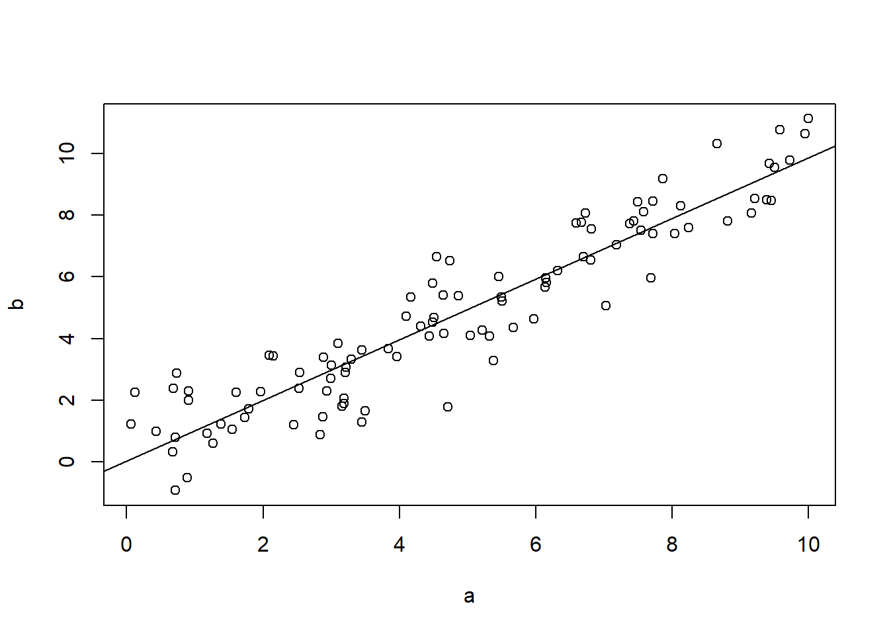

Chapter 8 Correlation
# With this short exercise we want to see how the Pearson correlation coefficient
# is a measure of linear correlation between two variables.
x <- runif(100, min = 0, max = 10)
y <- sin(x) + rnorm(100, mean = 0, sd = 0.5)
plot(x,y)
abline(lm(y ~ x))
cor(x, y)## [1] -0.04431211# The Pearson correlation coefficient is also symmetric
cor(x, y) == cor(x, y)## [1] TRUEcor.test(x, y)##
## Pearson's product-moment correlation
##
## data: x and y
## t = -0.4391, df = 98, p-value = 0.6616
## alternative hypothesis: true correlation is not equal to 0
## 95 percent confidence interval:
## -0.2386531 0.1534415
## sample estimates:
## cor
## -0.04431211###
a <- runif(100, min = 0, max = 10)
b <- a + rnorm(100, mean = 0, sd = 1)
plot(a,b)
abline(lm(b ~ a))
cor(a, b)## [1] 0.9336273cor.test(a, b)##
## Pearson's product-moment correlation
##
## data: a and b
## t = 25.799, df = 98, p-value < 2.2e-16
## alternative hypothesis: true correlation is not equal to 0
## 95 percent confidence interval:
## 0.9027582 0.9549292
## sample estimates:
## cor
## 0.9336273rm(list = ls())
set.seed(12345)
# Programming challenge
# Program a function that takes two inputs, x and y, and
# returns the correlation coefficient between x and y
x <- rnorm(100, mean = 0, sd = 1)
y <- rnorm(100, mean = 0, sd = 5)
my_corr_function <- function(a, b) {
numerator <- sum((x - mean(x)) * (y - mean(y)))
denominator <- sqrt(sum((x - mean(x))^2) * sum((y - mean(y))^2))
correl <- numerator / denominator
return(correl)
}
my_corr_function(a = x, b = y)## [1] 0.1042097cor(x,y)## [1] 0.10420978.1 Expected value, variance and covariance rules
Expected value
The of a (discrete) random variable is the arithmetic mean of that variable where each value is weighted by its probability. It can also be thought as the long-run average for any random variable over an indefinite number of trials. For a discrete random variable X having the possible values \(x_1, \dots, x_N\) the expectation of X is defined as:
\[ E(X) = x_1P(X=x_1) + \dots + x_NP(X=x_N) = \sum\limits_{i=1}^{N} x_iP(X = x_i) = \sum\limits_{i=1}^{n} x_ip_{i}\]
The expected value of a random variable can be also understood as the population mean, \(E(X) = \mu_x\) or simply \(\mu\). With equals weights, the formula for the expected value will be equal to the formula for the arithmetic average. Similarly, the expected value of functions of discrete random variables is given by the following:
\[ E\{g(X)\} = g(x_1)p_1 + \dots + g(x_N)p_N = \sum\limits_{i=1}^{N} g(x_i)p_i\]
Rule 1
The expected value of a constant, for example , is that constant
\[\begin{align} E(b) = b \end{align}\]
This rule can be easily understood following the rules of the summation operator.
\[\begin{align} E(b) & = \dfrac{1}{N}\sum_{i=1}^{N}b \nonumber \\ & = \dfrac{1}{N}Nb \nonumber \\ & = b \nonumber \end{align}\]
Rule 2
If \(X\) is a random variable and \(b\) is a constant then,
\[\begin{align} E(bX) = bE(X) \end{align}\]
Again, using the rules of the summation operator and substituting back the population mean \(\mu_x\) (remember that \(E(X) = \mu_x\)):
\[\begin{align} E(bX) & = \dfrac{1}{N}\sum_{i=1}^{N}x_{i}b \nonumber\\ & = b\dfrac{1}{N}\sum_{i=1}^{N}x_{i} \nonumber\\ & = b\mu_x \nonumber \\ & = bE(X) \nonumber \end{align}\]
Rule 3
The expected value of the sum of several variables is the sum of the expected values. If X, Y, and Z are three random variables, then,
\[\begin{align} E(X + Y + Z) = E(X) + E(Y) + E(Z) \end{align}\]
The rules of the sigma operator can be applied also to this case.
\[\begin{align} E(X + Y + Z) & = \dfrac{1}{N}\sum_{i=1}^{N}(x_{i} + y_{i} + z_{i}) \nonumber\\ & = \dfrac{1}{N}\sum_{i=1}^{N}x_{i} + \dfrac{1}{N}\sum_{i=1}^{N}y_{i} + \dfrac{1}{N}\sum_{i=1}^{N}z_{i} \nonumber\\ & = \mu_x + \mu_y + \mu_z \nonumber\\ & = E(X) + E(Y) + E(Z) \nonumber \end{align}\]
Note also that \(E(X^2) \neq [E(X)]^2\) and that for non-linear functions \(E[g(X)] \neq g[E(X)]\). and can be seen with simple numerical examples. This is left as an exercise.
Covariance
The population between two random variables X and Y \(cov(X,Y)\) is defined as the expected value of the product of the deviation of the variables from their respective means.
\[\begin{align} cov(X,Y) & = E\{(X-\mu_x)(Y-\mu_y)\} \\ & = E[XY - \mu_xY - \mu_yX + \mu_y\mu_x]\nonumber\\ & = E(XY) - \mu_xE(Y) - \mu_y(X) + E(\mu_x\mu_y)\nonumber\\ & = E(XY) - \mu_x\mu_y - \mu_y\mu_x + \mu_x\mu_y\nonumber\\ & = E(XY) - \mu_x\mu_y\nonumber\\ & = E(XY) - E(X)E(Y)\nonumber \end{align}\]
On the contrary, two random variables \(X\) and \(Y\) are said to be independent if \(cov(X,Y) = 0\). Only in this case,
\[\begin{align} E(XY) = E(X)E(Y) \end{align}\]
Rule 1
If \(Y = V + W\), then,
\[\begin{align} cov(X, Y) = cov(X, V) + cov(X, W) \end{align}\]
PROOF for Rule 1:
\[\begin{align} cov(X,Y) & = E\{(X - \mu_x)(Y - \mu_y)\} \nonumber \\ & = E\{(X - \mu_x)([V + W] - [\mu_v + \mu_w])\} \nonumber \\ & = E\{(X - \mu_x)(V - \mu_v) + (X - \mu_x)(W - \mu_w)\}\nonumber \\ & = cov(X, V) + cov(X, W)\nonumber \end{align}\]
Rule 2
If \(Y = bZ\), where is a constant and a random variable, then,
\[\begin{align} cov(X, Y) = b\cdot cov(X, Z) \end{align}\]
PROOF for Rule 2
\[\begin{align} cov(X,Y) & = E\{(X - \mu_x)(Y - \mu_y)\}\nonumber \\ & = E\{(X - \mu_x) (bZ - b\mu_z)\}\nonumber \\ & = bE\{(X - \mu_x) (Z - \mu_z)\}\nonumber \\ & = bcov(X,Z)\nonumber \end{align}\]
Rule 3
If \(Y = b\), where is a constant, then,
\[\begin{align} cov(X, Y) = 0 \end{align}\]
PROOF for Rule 3:
\[\begin{align} cov(X,Y) & = E\{(X - \mu_x)(Y - \mu_y)\}\nonumber \\ & = E\{(X - \mu_x) (b - b)\}\nonumber \\ & = E\{0\}\nonumber \end{align}\]
Variance
The population of a random variable \(X\) can be understood as a measure of the dispersion of its probability distribution. It is defined as the expected (or average) squared deviation of its values from the mean.
\[\begin{align} var(X) & = E\{(X - \mu_x)^2\}\nonumber \\ & = E(X^2 - 2\mu_xX + \mu_{X}^{2})\nonumber \\ & = E(X^2) + E(-2\mu_xX) + E(\mu_{X}^{2})\nonumber \\ & = E(X^2) - 2\mu_xE(X) + \mu_{X}^{2}\nonumber \\ & = E(X^2) - 2\mu_x\mu_x + \mu_{X}^{2}\nonumber \\ & = E(X^2) - \mu_x^{2}\nonumber \end{align}\]
We can also think of a random variable \(X\) composed of two entities, the population mean \(\mu_x\) and a disturbance term or random component \(u\).
\[\begin{align} X = \mu_x + u \hspace{1cm}\text{from which it follows that}\hspace{1cm} u = X - \mu_x \end{align}\]
We can show that the expected value of \(u\) is zero and that the variance of X is the same as the variance of \(u\). In other words, the variance of X solely depends on the variance of \(u\) and not of its mean (!).
\[\begin{align} E(u) = E(X - \mu_x) = E(X) + E(- \mu_x) = \mu_x - \mu_x = 0 \end{align}\]
We know that,
\[\begin{align} var(X) = E\{(X - \mu_x)^2\} = E(u^2) \end{align}\]
and,
\[\begin{align} var(u) = E\{(u - \text{mean of}\hspace{0.1cm} u)^2 \} = E\{(u - 0)^2 \} = E(u^2) \end{align}\]
therefore,
It is also useful and pretty straight forward to note that the variance of a random variable \(X\) can be thought of the covariance of \(X\) with itself:
\[\begin{align} var(X) & = E\{(X - \mu_x)^2\}\nonumber \\ & = E\{(X - \mu_x)(X - \mu_x)\}\nonumber \\ & = cov(X, X)\nonumber \end{align}\]
Rule 1
If \(Y = V + W\), then,
\[\begin{align} var(Y) = var(V) + var(W) + 2cov(V, W) \end{align}\]
PROOF for Rule 1:
\[\begin{align} var(Y) & = cov(Y,Y) \nonumber \\ & = cov(Y,[V + W]) \nonumber \\ & = cov(Y,V) + cov(Y,W) \nonumber \\ & = cov(V,[V + W]) + cov([V + W],W) \nonumber \\ & = cov(V,V) + cov(W,V) + cov(V,W) + cov(W,W) \nonumber \\ & = var(V) + var(W) + 2cov(V, W) \nonumber \\ \end{align}\]
Rule 2
If \(Y = bZ\), where \(b\) is a constant, then,
\[\begin{align} var(Y) = b^2var(Z) \end{align}\]
PROOF for Rule 2:
\[\begin{align} var(Y) & = cov(Y,Y)\nonumber \\ & = cov(bZ,Y)\nonumber \\ & = bcov(Z,Y)\nonumber \\ & = bcov(Z,bZ)\nonumber \\ & = b^2cov(Z,Z)\nonumber \\ & = b^2var(Z)\nonumber \end{align}\]
Rule 3
If \(Y = b\), where \(b\) is a constant, then,
\[\begin{align} var(Y) = 0 \end{align}\]
PROOF for Rule 3:
\[\begin{align} var(Y) & = cov(b,b)\nonumber \\ & = 0 \nonumber \end{align}\]
Rule 4
If \(Y = V + b\), where \(b\) is a constant, then,
\[\begin{align} var(Y) = var(V) \end{align}\]
PROOF for Rule 4:
\[\begin{align} var(Y) & = var(V + b) \nonumber \\ & = var(V) + var(b) + 2cov(V,b)\nonumber \\ & = var(V) \nonumber \\ \end{align}\]